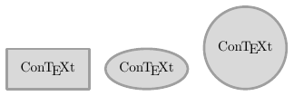
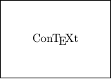
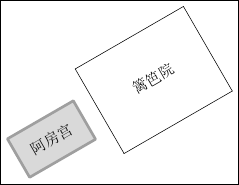
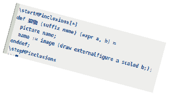
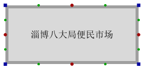
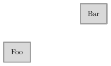
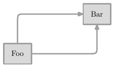
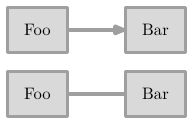
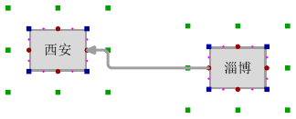
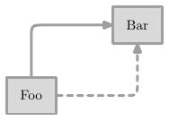

2023 年 04 月 30 日
上一篇：配置文件与模块
基于前面五篇文章的摸索，现在已基本具备了写一个新的蜗牛模块的能力。与旧的蜗牛模块相比，新模块带有一些中文编程的特征，可能会令人有所不适，但我觉得，除了我，可能也没人会考虑使用它，故而请容许我牵黄擎苍，聊以自娱。
建立空文件 snail.tex，令其内容为
\startluacode
local 配置 = {}
配置.字号 = "BodyFontSize" -- ConTeXt 正文字体所用字号
配置 = {
字号 = 配置.字号,
文字 = {颜色 = "black"},
框形 = "fullsquare",
框 = {余地 = 配置.字号, 线宽 = ".175" .. 配置.字号, 颜色 = "darkgray", 各向同性 = "false"},
背景 = { 颜色 = "lightgray" },
路径 = { 线宽 = ".2" .. 配置.字号, 颜色 = "darkgray"},
圆角 = 配置.字号,
玩笑 = "0"
}
table.save("snail.conf", 配置)
\stopluacode
\startMPinclusions
lua("配置 = table.load('snail.conf')");
def 获 expr a = lua("mp.print(" & a & ")") enddef;
def 设 expr a = lua(a) enddef;
def 恢复默认配置 =
lua("配置 = table.load('snail.conf')")
enddef;
\stopMPinclusions我将带有常规外框（矩形、椭圆、菱形等）的文字称为「宫」，并为之定义宏 宫：
\startMPinclusions[+]
def 宫 (suffix name) (expr a) =
picture name;
begingroup
save 框, 文, w, h, s;
path 框; picture 文; numeric w, h, s;
文 := textext(a);
w := bbwidth 文; h := bbheight 文;
if (获 "配置.框.各向同性"):
if w > h: s = w; else: s = h; fi;
框 := fullsquare xysized (s, s) enlarged ((获 "配置.框.余地") * (1, 1));
else:
框 := fullsquare xysized (w, h) enlarged ((获 "配置.框.余地") * (1, 1));
fi;
框 := (获 "配置.框形") xysized (bbwidth 框, bbheight 框);
if (获 "配置.玩笑") > 0: 框 := 框 randomized (获 "配置.玩笑"); fi;
name := image (fill 框 withcolor (获 "配置.背景.颜色");
draw 框 withpen pencircle scaled (获 "配置.框.线宽")
withcolor (获 "配置.框.颜色");
draw 文 withcolor (获 "配置.文字.颜色"););
endgroup;
enddef;
\stopMPinclusions宫 是目前为止最为健全的框文宏，其基本用法示例如下：
\input snail
\startuseMPgraphic{foo-1}
宫(ConTeXt, "\ConTeXt");
draw ConTeXt;
\stopuseMPgraphic
\startuseMPgraphic{foo-2}
设 "配置.框形 = 'fullcircle'";
宫(ConTeXt, "\ConTeXt");
draw ConTeXt;
\stopuseMPgraphic
\startuseMPgraphic{foo-3}
设 "配置.框.各向同性 = 'true'";
宫(ConTeXt, "\ConTeXt");
draw ConTeXt;
\stopuseMPgraphic
\startTEXpage[offset=4pt]
\hbox{\useMPgraphic{foo-1}\quad\useMPgraphic{foo-2}\quad\useMPgraphic{foo-3}}
\stopTEXpage
廷是无边框文字，但是文字外围需要留有一些余地，可使用 ConTeXt 的 \framed 宏辅助构造：
\defineframed[snailframe][offset=1em,frame=off]
\startMPinclusions[+]
def 廷 (suffix name) (expr a) =
picture name;
begingroup
save 文; picture 文; 文 := textext("\snailframe{" & a & "}");
name := image (draw 文 withcolor (获 "配置.文字.颜色"););
endgroup;
enddef;
\stopMPinclusions以下为测试用例：
\input snail
\setupframed[snailframed][offset=1cm]
\startuseMPgraphic{foo}
廷(ConTeXt, "\ConTeXt");
draw ConTeXt;
\stopuseMPgraphic
\startTEXpage[offset=4pt,frame=on]
\useMPgraphic{foo}
\stopTEXpage
城是组合结构。多个宫或廷可组合为一个城。城 的定义如下：
\startMPinclusions[+]
def 宫廷 (suffix a) (expr b) = picture a; a := b; enddef;
def 城 (suffix a) (text b) =
宫廷(a, nullpicture);
for i = b: addto a also image(draw i); endfor;
enddef;
\stopMPinclusions城 的测试用例：
\usemodule[zhfonts]
\input snail
\setupframed[snailframed][frame=on,offset=1cm]
\startuseMPgraphic{foo}
宫(a, "阿房宫");
廷(b, "篱笆院");
城(c, a, b shifted (3cm, 0));
draw c rotated 30;
\stopuseMPgraphic
\startTEXpage[offset=4pt,frame=on]
\useMPgraphic{foo}
\stopTEXpage
外部图片称为景物，相应的宏定义如下：
\startMPinclusions[+]
def 景物 (suffix name) (expr a, w, h) =
picture name;
begingroup;
save p, s; picture p; numeric s;
p := externalfigure a;
s := (bbwidth p) / (bbheight p);
if numeric w and numeric h:
name := image(draw externalfigure a xysized (w, h););
else:
if numeric w:
name := image(draw externalfigure a xysized (w, w / s););
fi;
if numeric h:
name := image(draw externalfigure a xysized (h * s, h););
fi;
fi;
endgroup;
enddef;
\stopMPinclusions测试用例：
\input snail
\startuseMPgraphic{foo}
景物(代码, "demo.png", 8cm, "auto");
draw 代码 rotated -15;
\stopuseMPgraphic
\startTEXpage[offset=4pt]
\useMPgraphic{foo}
\stopTEXpage
需要注意的是，可能是 DPI 不一致的缘故，MetaPost 载入的位图，在我的机器上，尺寸约为图片原始尺寸的 1/3，ConTeXt 也是如此。
\startMPinclusions[+]
def 显 = true enddef;
def 隐 = false enddef;
def 四角十二门 (suffix foo) (expr 或显或隐) =
forsuffixes i = 东北角, 东南角, 西南角, 西北角,
子门, 卯门, 午门, 酉门,
丑门, 寅门, 辰门, 巳门, 未门, 申门, 戌门, 亥门:
pair foo.i;
endfor;
foo.西北角 := (ulcorner foo);
foo.东北角 := (urcorner foo);
foo.东南角 := (lrcorner foo);
foo.西南角 := (llcorner foo);
foo.子门 := .5[foo.西北角, foo.东北角];
foo.午门 := .5[foo.西南角, foo.东南角];
foo.卯门 := .5[foo.东南角, foo.东北角];
foo.酉门 := .5[foo.西南角, foo.西北角];
foo.丑门 := .5[foo.子门, foo.东北角];
foo.寅门 := .5[foo.卯门, foo.东北角];
foo.辰门 := .5[foo.卯门, foo.东南角];
foo.巳门 := .5[foo.午门, foo.东南角];
foo.未门 := .5[foo.午门, foo.西南角];
foo.申门 := .5[foo.酉门, foo.西南角];
foo.戌门 := .5[foo.酉门, foo.西北角];
foo.亥门 := .5[foo.子门, foo.西北角];
if 或显或隐:
forsuffixes i = 东北角, 东南角, 西南角, 西北角:
draw foo.i withpen pensquare scaled 4pt withcolor darkblue;
endfor;
forsuffixes i = 子门, 卯门, 午门, 酉门:
draw foo.i withpen pencircle scaled 4pt withcolor darkred;
endfor;
forsuffixes i = 丑门, 寅门, 辰门, 巳门, 未门, 申门, 戌门, 亥门:
draw foo.i
withpen pencircle scaled 3pt withcolor darkgreen;
endfor;
fi;
enddef;
\stopMPinclusions测试用例：
\usemodule[zhfonts]
\input snail
\startuseMPgraphic{foo}
设 "配置.框.余地 = '1cm'";
设 "配置.框.线宽 = '4pt'";
宫(foo, "淄博八大局便民市场");
draw foo;
四角十二门(foo, 显); % 将「显」换为「隐」可隐藏四角十二门
\stopuseMPgraphic
\startTEXpage[offset=4pt]
\useMPgraphic{foo}
\stopTEXpage
\startMPinclusions[+]
def 偏 expr a = shifted a enddef;
tertiarydef a 位于 b = a 偏 (center b - center a) enddef;
def 令 suffix a = 令之体(a) enddef;
def 令之体 (suffix a) text b = a := a b enddef;
\stopMPinclusions测试用例：
\input snail
\startuseMPgraphic{foo}
宫(foo, "Foo");
宫(bar, "Bar");
令 bar 位于 foo 偏 (4cm, 2cm);
draw foo; draw bar;
\stopuseMPgraphic
\startTEXpage[offset=4pt]
\useMPgraphic{foo}
\stopTEXpage
\startMPinclusions[+]
pair 竖亥;
tertiarydef a 经转 b =
hide(竖亥 := (xpart (if path a: point (length a) of a else: a fi), ypart (b)))
a -- (point -(获 "配置.路径.圆角") on (a -- 竖亥))
.. controls 竖亥 .. (point (获 "配置.路径.圆角") on (竖亥 -- b)) -- b
enddef;
tertiarydef a 纬转 b =
hide(竖亥 := (xpart (b), ypart (if path a: point (length a) of a else: a fi)))
a -- (point -(获 "配置.路径.圆角") on (a -- 竖亥))
.. controls 竖亥 .. (point (获 "配置.路径.圆角") on (竖亥 -- b)) -- b
enddef;
\stopMPinclusionsMetaPost 的 hide 宏，其参数不会参与宏展开。
测试用例：
\input snail
\startuseMPgraphic{foo}
宫(foo, "Foo");
宫(bar, "Bar");
bar := bar shifted (4cm, 2cm);
draw foo; draw bar;
四角十二门(foo, 隐); 四角十二门(bar, 隐);
drawpathoptions(withpen pencircle scaled 2pt withcolor darkgray);
drawarrowpath foo.子门 经转 bar.酉门;
drawarrowpath foo.卯门 纬转 bar.午门;
\stopuseMPgraphic
\startTEXpage[offset=4pt]
\useMPgraphic{foo}
\stopTEXpage
\startMPinclusions[+]
tertiarydef a => b =
begingroup
save outgoing, incoming, va, vb, do_nothing;
pair outgoing, incoming, va[], vb[];
boolean do_nothing; do_nothing := false;
va[1] := if pair a: a else: llcorner a fi;
va[2] := if pair a: a else: urcorner a fi;
vb[1] := if pair b: b else: llcorner b fi;
vb[2] := if pair b: b else: urcorner b fi;
if xpart va[2] < xpart vb[1]: % a 在 b 的左侧
outgoing := if pair a: a else: 0.5[lrcorner a, urcorner a] fi;
incoming := (xpart vb[1], ypart outgoing);
elseif xpart va[1] > xpart vb[2]: % a 在 b 的右侧
outgoing := if pair a: a else: 0.5[llcorner a, ulcorner a] fi;
incoming := (xpart vb[2], ypart outgoing);
elseif ypart va[1] > ypart vb[2]: % a 在 b 的上方
outgoing := if pair a: a else: 0.5[llcorner a, lrcorner a] fi;
incoming := (xpart outgoing, ypart vb[2]);
elseif ypart va[2] < ypart vb[1]: % a 在 b 的下方
outgoing := if pair a: a else: 0.5[ulcorner a, urcorner a] fi;
incoming := (xpart outgoing, ypart vb[1]);
else:
do_nothing := true;
fi;
if do_nothing: nullpicture else: outgoing -- incoming fi
endgroup
enddef;
drawpathoptions(withpen pencircle scaled (获 "配置.路径.线宽") withcolor (获 "配置.路径.颜色"));
def 流向 text a =
drawarrowpath if (获 "配置.玩笑") > 0: (a) randomized (获 "配置.玩笑") else: a fi;
enddef;
def 串联 text a =
drawpath if (获 "配置.玩笑") > 0: (a) randomized (获 "配置.玩笑") else: a fi;
enddef;测试用例：
\input snail
\startuseMPgraphic{foo-1}
宫(foo, "Foo");
宫(bar, "Bar");
令 bar 位于 foo 偏 (3cm, 0);
draw foo; draw bar;
流向 foo => bar;
\stopuseMPgraphic
\startuseMPgraphic{foo-2}
宫(foo, "Foo");
宫(bar, "Bar");
令 bar 位于 foo 偏 (3cm, 0);
draw foo; draw bar;
串联 foo => bar;
\stopuseMPgraphic
\startTEXpage[offset=4pt]
\useMPgraphic{foo-1}
\blank
\useMPgraphic{foo-2}
\stopTEXpage
\startMPinclusions[+]
def 标注 (expr tag, anchor, c) text p =
begingroup
save formatted_tag, pos, offset, t;
pair pos; numeric offset; string t, formatted_tag;
formatted_tag := "\tfx" & tag;
pos := point c along (p);
offset := .25(获 "配置.字号");
if anchor = "北":
pos := pos shifted (0, offset);
t := "thetextext" & ".top";
elseif anchor = "东":
pos := pos shifted (offset, 0);
t := "thetextext" & ".rt";
elseif anchor = "南":
pos := pos shifted (0, -offset);
t := "thetextext" & ".bot";
elseif anchor = "西":
pos := pos shifted (-offset, 0);
t := "thetextext" & ".lft";
fi;
draw scantokens(t)(formatted_tag, pos);
endgroup;
enddef;
\stopMPinclusions测试用例：
\usemodule[zhfonts]
\input snail
\startuseMPgraphic{foo}
宫(foo, "Foo");
宫(bar, "Bar");
令 bar 位于 foo 偏 (4cm, 3cm);
draw foo; draw bar;
四角十二门(foo, 隐); 四角十二门(bar, 隐);
path foo~bar; foo~bar := foo.卯门 纬转 bar.午门;
drawarrowpath foo~bar;
标注("逢山开路", "北", .3) foo~bar;
标注("\rotate[rotation=90]{遇水搭桥}", "西", .76) foo~bar;
\stopuseMPgraphic
\startTEXpage[offset=4pt]
\useMPgraphic{foo}
\stopTEXpage
\startMPinclusions[+]
def 开启虚线模式 =
drawpathoptions(dashed (evenly scaled .625(获 "配置.路径.线宽"))
withpen pencircle scaled (获 "配置.路径.线宽")
withcolor (获 "配置.路径.颜色"));
enddef;
def 关闭虚线模式 =
drawpathoptions(withpen pencircle scaled (获 "配置.路径.线宽")
withcolor (获 "配置.路径.颜色"));
enddef;
% 默认关闭虚线模式
关闭虚线模式;
\stopMPinclusions测试用例：
\input snail
\startuseMPgraphic{foo}
宫(foo, "Foo");
宫(bar, "Bar");
令 bar 位于 foo 偏 (3cm, 2cm);
draw foo; draw bar;
四角十二门(foo, 隐);
四角十二门(bar, 隐);
开启虚线模式;
drawarrowpath foo.卯门 纬转 bar.午门;
关闭虚线模式;
drawarrowpath foo.子门 经转 bar.酉门;
\stopuseMPgraphic
\startTEXpage[offset=4pt]
\useMPgraphic{foo}
\stopTEXpage
倘若上述一切设施无助于构造路径，可考虑使用以下更为自由构造路径的宏：
\startMPinclusions[+]
def 北 = up enddef; def 南 = down enddef;
def 西 = left enddef; def 东 = right enddef;
def 北行 expr a = (北 * (a)) enddef;
def 南行 expr a = (南 * (a)) enddef;
def 西行 expr a = (西 * (a)) enddef;
def 东行 expr a = (东 * (a)) enddef;
def 从 = enddef;
tertiarydef a 向 b =
if pair a:
a -- (a shifted b)
elseif path a:
a -- (point (length a) of a) shifted (b)
fi
enddef;
\stopMPinclusions测试用例：
\input snail
\startuseMPgraphic{foo}
path p; p := (0, 0);
numeric s; s := .125cm;
for i = 1 upto 7:
for j = "北行", "西行", "南行", "东行":
s := s + .125cm;
p := 从 p 向 (scantokens(j) s);
endfor;
endfor;
设 "配置.玩笑 = '4pt'";
流向 p;
\stopuseMPgraphic
\startTEXpage[offset=4pt]
\useMPgraphic{foo}
\stopTEXpage